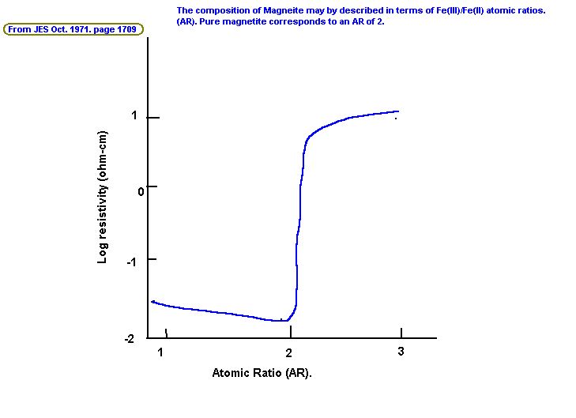

Journal of Electrochemical Society. 118, (1971) 1709
Electrical resistivity of Magnetite anodes
R.Itai, M. Shibuya, T. Matsumura, G. Ishi
Japan Carlit Company Limited, Japan
Considerable progress has been made in quality and economy of Magnetite anodes, and they are now used not only in traditional Chlorate cells, but also in such new fields as cathodic protection and electrodialysis.
Electrolytic manufacture of Sodium Chlorate with Magnetite has been described in(1) {Electrochemical Technology 1968, see elsewhere on this page}. Since they have a relatively high electrical resistance compared with graphite, this should be kept as low as possible through quality control. Much work has been done with regard to factors which govern electrical resistance of commercial Magnetite anodes. In the present paper, effects of composition, temperature, and some additives on resistivity of cast Magnetite samples prepared from relatively pure mill scale, are described.
Experimental
Composition of Magnetite and its raw materials may be expressed in terms of Fe(III)/Fe(II) (ie. Fe2O3/FeO) atomic ratios (AR). Pure Magnetite corresponds to an AR of 2.00.
Determination of AR
Dissolve a weighed portion of a sample in 12N H2SO4 , titrate it with 0.1N KMnO4 which will give you Fe(II).
Dissolve another portion in 8N HCl, add SnCl2 to reduce any Fe3+, oxidize the excess SnCl2 with saturated solution of HgCl2, add MnSO4 and finally titrate it with 0.1N KMnO4 to obtain the total Iron which gives Fe(III) by difference.
Preparation of Magnetite samples
Mill scale of as high quality as was available was melted under conditions similar to the practical ones. Composition of the mill scale used throughout is shown in Table.
| SiO2 | Al2O3 | CaO | MgO | FeO | Fe2O3 |
| 1.09% | 0.93% | 0.50% | 0.13% | 44.2% | 53.4% |
Purity was much better than that of Hematite ore, a common raw material for commercial Magnetite anodes. The feed was a mixture of unoxidized and partly oxidized mill scales in such a ratio as to give any target AR value in the final product.
Melting was carried out in a 15KW resistor furnace. The melt was poured into a red hot cast iron mold and was left cooling overnight in an annealing furnace preheated to 800 to 900C. Samples, 15mm wide, 75mm long, and 8mm thick were ground out of Ingots of Magnetite.
The resistivity of the anodes was measured by plating the ends of the Magnetite with copper.
Results and discussion
Effect on AR on resistivity
Direct current resistance (p) at 25C of cast Magnetite is shown in the picture.

The curve has a jump at about AR = 2 which corresponds to stoichiometric point from the lower to the higher AR region, p, increased 100 fold. The observed value of p at AR = 2 was about five times as high as that reported for pure single crystals of Fe3O4. The difference might be explained by the fact that conductivity of poly crystalline Magnetite is 10% to 20% of that of single crystals, and partly by the presence of small amounts of impurities in our sampled.
From a practical point of view, it is obviously advantageous to keep AR of the anode as close as possible to 2.0 but never in excess of it. (Keep molten Magnetite exposed to air/Oxygen.)
HIT THE BACK BUTTON ON YOUR BROWSER
BACK TO TOP